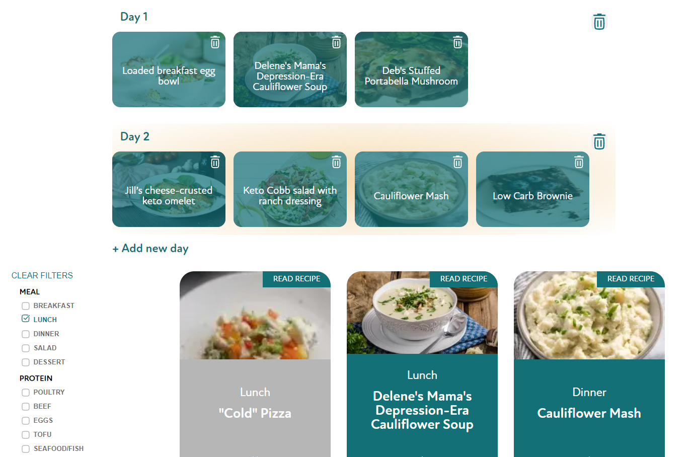
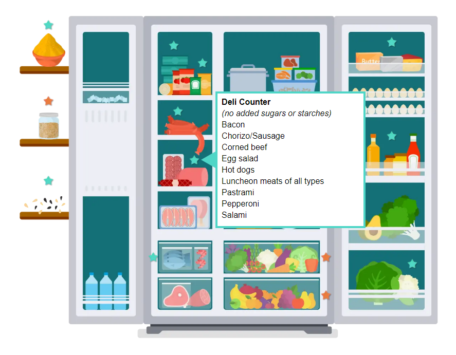

The challenge
Healthy Eating Jumpstart is a collaborative program between two Michigan Medicine CQIs, Healthy Behavior Optimization for Michigan (HBOM) and Michigan Collaborative for Type 2 Diabetes (MCT2D). The program offers food assistance resources for Type 2 Diabetes patients with food insecurity. The purpose of this website is to provide low carb eating resources for participants in the Healthy Eat Jumpstart Program that also appeal to health care providers or anybody interested in low carb dieting.
The process
Using Next.JS, I built an interactive, mobile-responsive website based on Figma designs created by the design team. The website uses HBOM’s WordPress API to fetch low-carb recipes. Additional resources are drawn from Contentful, the headless CMS used for MCT2D’s website. The website was initially built over a span of two weeks and continues to receive periodic content updates.
The goal
An interactive, mobile responsive, and website that allows users to find and share content about low carb diets. The Healthy Eating Jumpstart Program was highlighted by the White House at the 2022 White House Conference for Hunger, Nutrition, and Growth.
My development process
This project has two major components which were handled simultaneously and iteratively:
- The design, done by the design team (Figma)
- The website code (Next.JS)
The website design was done by an expert designer in Figma and handed off to me for implementation. The Figma designs only included a standard desktop view, so adapting a mobile-friendly design was my responsibility.
Feature Highlights
Low Carb Meal Plan
One of the most asked-for features for the Jumpstart website was the ability to create and save personalized low-carb meal plans. Using the recipe data loaded in from HBOM’s WordPress, I built out a meal plan page that lets users filter recipes based on various categories and add them to a multi-day meal plan that they can print or save as a PDF. Users can also click on a recipe to view more details.
To compliment the meal plan feature, we partnered with a tech startup called Basketful to include a button on each recipe page that allows users to add the necessary ingredients for that recipe directly to their Shipt cart. This makes it very easy for members in the program to use their food assistance resources for low-carb foods.
Shopping List
A big part of the design philosophy behind the Jumpstart website was to make learning about low carb eating fun. To that end, we included this interactive low-carb pantry that lets you hover over different food types to learn what kind of things you can buy that are low-carb.
Retrospective
The goal of this project was to create an interactive, mobile responsive, website that allows users to find and share content about low carb diets. This website has become a great repository of low-carb diet info that is useful for patients and medical professionals alike, including an aggregated list of external resources as well as blog posts curated by members of our team. I look forward to continuing to support the Healthy Eating Jumpstart Program and enable people to make positive changes in their lives.